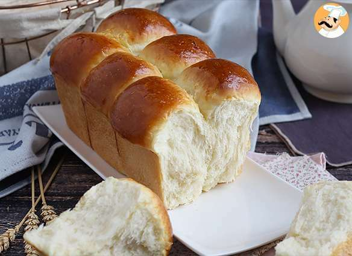

Brioche

Description
This Brioche is an easy-to-make alternative to the traditional
french recipe, adapted for the rush! You can use this as an afternoon
snack, as the entrance dish in a meal or even as a brunch option.
Using simple ingredients, you can make a delicious version of this classic.
Ingredients
- 450g strong white flour
- 2 tsp fine sea salt
- 50g caster sugar
- 7g dried active yeast
- 100ml whole milk
- 4 eggs at room temperature, beaten plus 1 for egg wash
- 190g salted butter, cubed and softened
Steps
- Put the flour in a bowl of a stand mixer with a dough hook.
Add the salt to one side and sugar to the other. Pour in the yeast
to the side with the sugar. Mix each side into the flour with your hands,
then mix it all together with the dough hook.
- Heat the milk until warm to the touch, but not hot. Mix into the flour mix until
combined. With the dough hook on medium, gradually add the eggs and mix for 10 mins.
- Gradually add the softened butter, one or two cubes at a time, until combined. This will take
5-8 mins. Scrape down the sides, the dough will be very soft.
- Scrape the dough into a large bowl, cover with a tea towel and leave for 1 hr 30 mins-2 hrs
until doubled in size and well-risen. Once risen, put in the fridge for 1 hr.
- Line the bottom and sides of a 900g loaf tin with baking parchment. Portion the dough
into seven equal pieces (the easiest way to do this accurately is to weigh it). Lightly
dust a work surface with flour, take a piece of dough and pull each corner into the middle
to form a circular shape. With a bit of pressure, push down and roll into ball. Repeat with
the six remaining pieces.
- Put the balls into the tin, four on one side and three in the gaps on the other side.
Cover with a tea towel and leave to prove for 30-35 mins until almost doubled in size.
Heat the oven to 180C/160C fan/gas 4. Lightly brush the dough with the egg wash and bake
for 30-35 mins until golden and risen. Leave to cool in the tin for 20 mins, then remove
and cool completely.